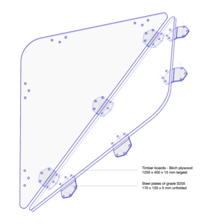
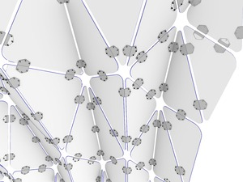

The present research describes the comprehensive development of a timber folded plate structure, and explores the potential of the folding principle for designing skeleton-based spatial shells.
Corrugated structures are well-known for their efficiency with regard to material saving and structural reliability, by stiffening a thin surface with the introduction of a series of folds through an optimized geometric design.
5mm steel is drilled and folded using CNC press.
Their inherent composition of discrete planar elements allows a high degree of prefabrication, offering the possibility to benefit from one of the most advanced sectors in the industry, thereby attaining a responsible material consumption while minimizing the ecological footprint.